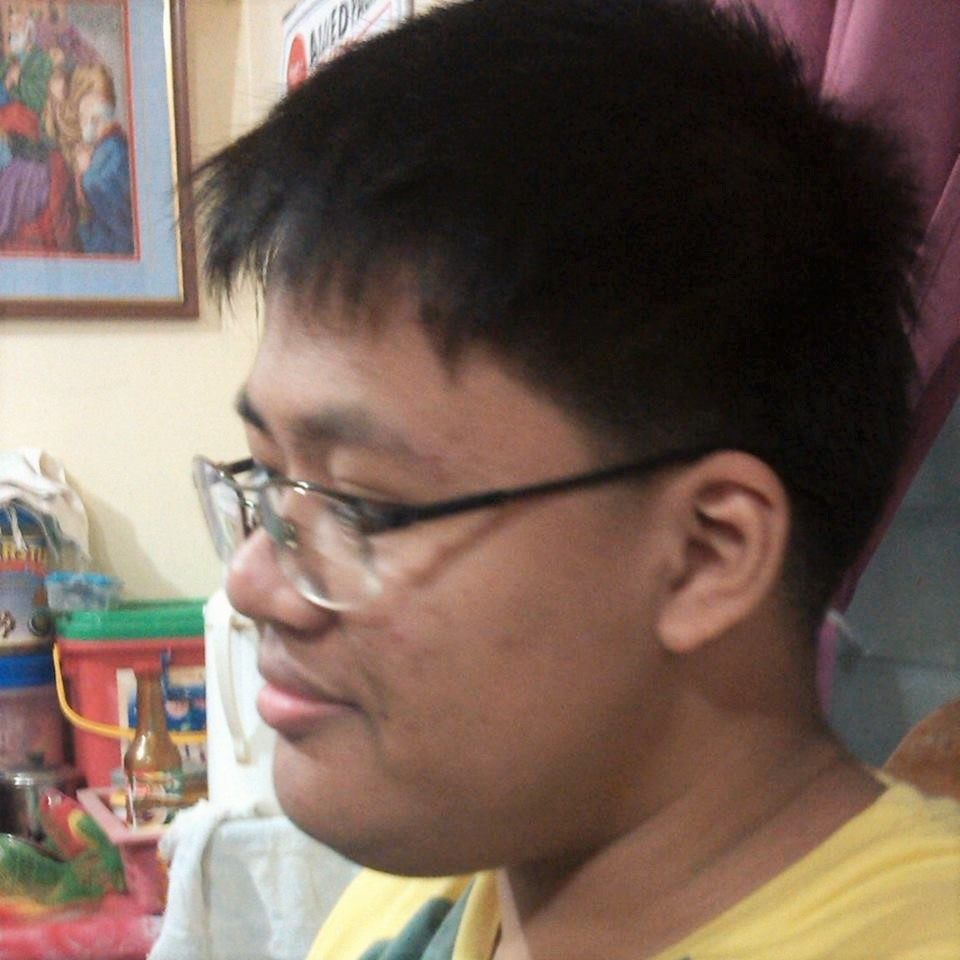
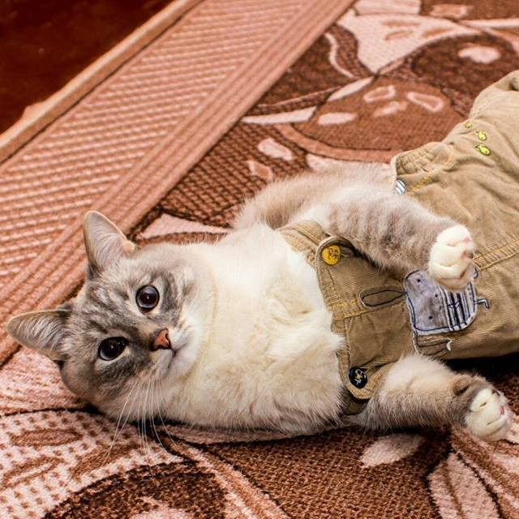
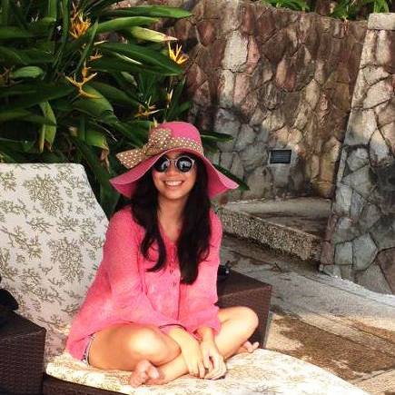
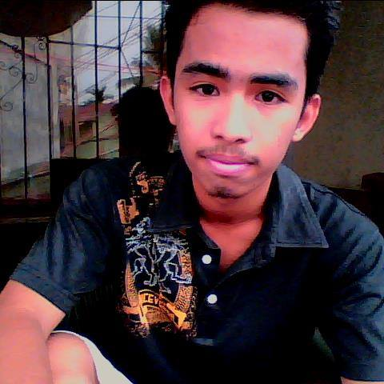
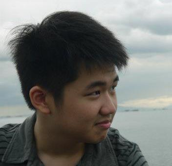
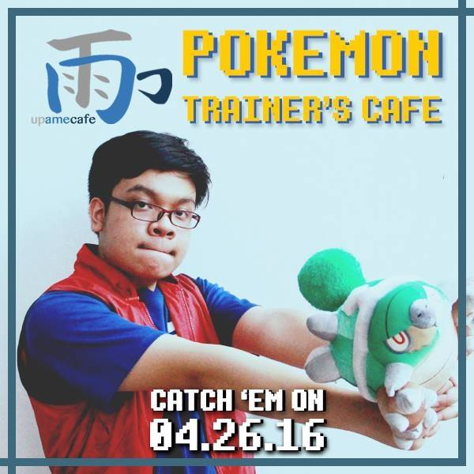

About
This CS 145 Capstone Project aims to create Arduino-based water level sensors (using ultrasonic proximity sensing) that are connected to a RESTful API for recording, retrieving and analyzing water level data. This will help conserve water, detect stagnant water to prevent the spread of disease-carrying mosquitoes, and give people a better overview of how their water is being used. The hardware side uses ACEduinos with Ethernet shields and the server side is built on NodeJS, Express and MongoDB. The front-end apps are being built using AngularJS.
This project is currently private on GitHub.

Vincent Paul Fiestada

Faith Therese Peña

Kristia Gail Alcancia

Mark Anton Mamac

Kerwin Delos Santos

Jaypee Renz San Gabriel
Additional Credits
Special thanks to the designers at Material Design Icons
The (temporary) icon is from the excellent Total War: Rome 2 game.